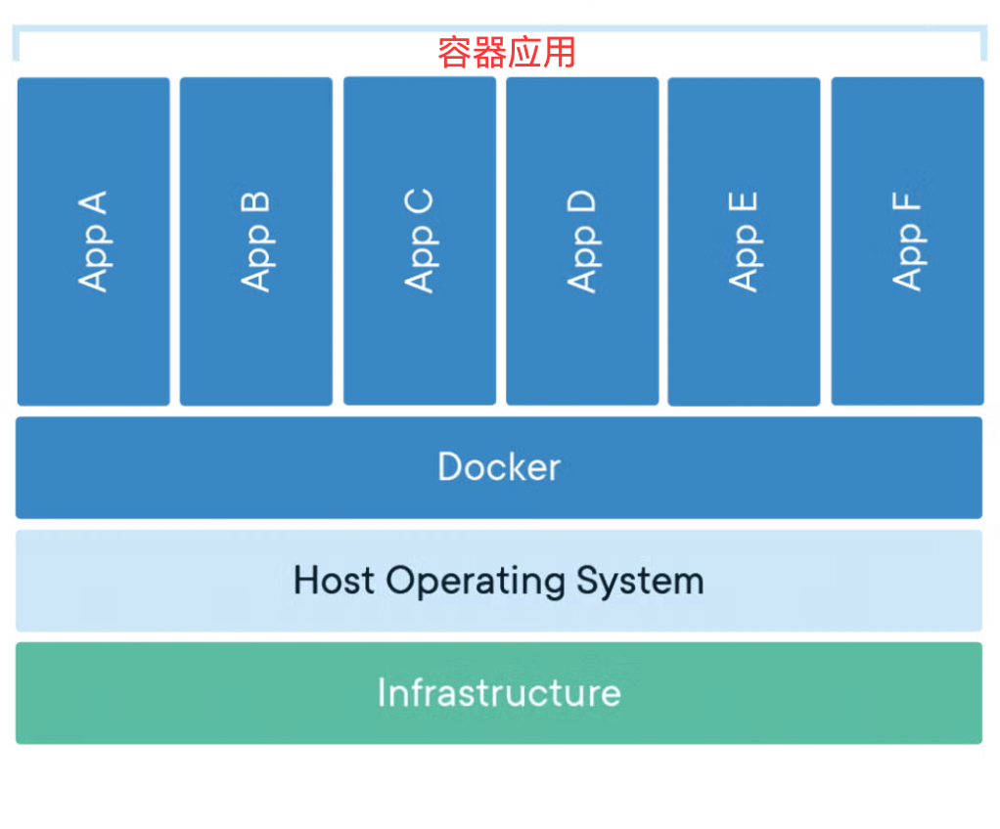

Docker 基础概念
什么是容器化技术
容器共享主机内核，轻量、隔离且高效，不像虚拟机需要完整的操作系统，下图展示了 Docker 容器的基本架构：
- 上层 是多个容器（App A~F），每个容器独立运行一个应用。
- 中间层 是 Docker，负责管理这些容器。
- 底层 是主机操作系统（Host OS）和基础设施，为容器提供硬件和系统支持。

1、传统应用部署的痛点
在传统的应用部署中，我们经常遇到以下问题：
- 环境不一致：应用在开发环境运行正常，但在测试或生产环境出现问题
- 依赖管理复杂：不同应用需要不同版本的运行时、库文件等
- 资源利用率低：传统虚拟机需要完整的操作系统，占用大量资源
- 部署复杂：需要手动配置环境、安装依赖，容易出错
2、容器化技术的解决方案
容器化技术通过以下方式解决了这些问题：
- 环境标准化：将应用及其依赖打包在一起，确保在任何环境中都能一致运行
- 轻量级：容器共享宿主机的操作系统内核，比虚拟机更轻量
- 快速部署：容器可以在几秒内启动，大大提高了部署效率
- 可移植性：一次构建，到处运行
3、容器化的核心理念
容器化遵循"不可变基础设施"的理念：
- 应用和环境被打包成不可变的镜像
- 每次部署都使用相同的镜像
- 配置通过环境变量或配置文件注入
- 问题修复通过重新构建镜像而非修改运行中的容器
Docker 的核心概念
1、镜像 (Image)
定义：镜像是一个只读的模板，包含了运行应用所需的所有内容：代码、运行时、库文件、环境变量和配置文件。
特点：
- 分层存储：镜像由多个层组成，每一层代表一次修改
- 只读性：镜像本身是只读的，不能直接修改
- 可复用：同一个镜像可以创建多个容器
- 版本管理：通过标签(tag)进行版本管理
类比理解：镜像就像是一个安装程序或者模板，它定义了应用运行所需的一切，但本身不能直接运行。
2、容器 (Container)
定义：容器是镜像的运行实例，是一个轻量级、可移植的执行环境。
特点：
- 隔离性：每个容器都有自己的文件系统、网络和进程空间
- 临时性：容器可以被创建、启动、停止、删除
- 可写层：容器在镜像基础上添加了一个可写层
- 进程级：容器内通常运行一个主进程
类比理解：如果镜像是类，那么容器就是对象实例。一个镜像可以创建多个容器，就像一个类可以创建多个对象。
3、仓库 (Repository)
定义：仓库是存储和分发镜像的地方，可以包含一个镜像的多个版本。
分类：
- 公共仓库：如 Docker Hub，任何人都可以使用
- 私有仓库：企业内部搭建，用于存储私有镜像
- 官方仓库：由软件官方维护的镜像仓库
Registry vs Repository：
- Registry：仓库注册服务器，如 Docker Hub
- Repository：具体的镜像仓库，如 nginx、mysql
Docker 与虚拟机的区别
1、架构对比
| 特性 | 虚拟机 | Docker容器 |
|---|---|---|
| 隔离级别 | 硬件级别虚拟化 | 操作系统级别虚拟化 |
| 操作系统 | 每个VM需要完整OS | 共享宿主机OS内核 |
| 资源占用 | 重量级，占用较多资源 | 轻量级，资源占用少 |
| 启动时间 | 分钟级别 | 秒级别 |
| 性能开销 | 较大 | 接近原生性能 |
| 镜像大小 | GB级别 | MB级别 |
2、容器 VS 虚拟机架构

3、使用场景对比
虚拟机适用场景：
- 需要完全隔离的环境
- 运行不同操作系统的应用
- 需要硬件级别的安全隔离
Docker容器适用场景：
- 微服务架构
- CI/CD流水线
- 应用快速部署和扩展
- 开发环境标准化
Docker 的优势和应用场景
主要优势
1. 环境一致性
- 问题解决："在我机器上能运行"的问题
- 实现方式：应用和环境打包在一起
- 价值：减少环境相关的bug和部署问题
2. 轻量级和高效
- 资源利用：比虚拟机占用更少资源
- 启动速度：秒级启动时间
- 密度：单机可运行更多应用实例
3. 可移植性
- 跨平台：Linux、Windows、macOS都支持
- 云原生：在各种云平台间迁移
- 混合环境：本地开发，云端部署
4. 版本控制和回滚
- 镜像版本：每个版本都有对应的镜像
- 快速回滚：出问题时快速回到上一版本
- A/B测试：同时运行不同版本进行对比
5. 扩展性
- 水平扩展：快速创建更多容器实例
- 弹性伸缩：根据负载自动调整容器数量
- 微服务：服务拆分和独立部署
典型应用场景
1. 微服务架构
- 服务拆分：每个微服务独立容器化
- 独立部署：服务可以独立更新和扩展
- 技术栈自由：不同服务可以使用不同技术
2. CI/CD流水线
- 构建环境：标准化的构建环境
- 测试隔离：每个测试在独立容器中运行
- 部署一致性：相同镜像在不同环境部署
3. 开发环境标准化
- 快速搭建：新成员快速获得开发环境
- 版本同步：团队使用相同的开发环境
- 依赖管理：避免本地环境冲突
4. 应用现代化
- 遗留系统：将传统应用容器化
- 云迁移：帮助应用迁移到云平台
- 混合云：在不同云环境间移植
Docker 架构组件
整体架构图

Docker Client
功能：
- 用户与Docker交互的主要方式
- 接收用户命令并发送给Docker Daemon
- 可以与远程Docker Daemon通信
常用命令：
docker run- 运行容器docker build- 构建镜像docker pull- 拉取镜像docker ps- 查看容器状态
Docker Daemon
功能：
- Docker的核心服务进程
- 管理镜像、容器、网络和存储卷
- 监听Docker API请求并处理
主要职责：
- 镜像管理（构建、存储、分发）
- 容器生命周期管理
- 网络管理
- 数据卷管理
- 与Registry通信
Docker Engine
组成：
- Docker Client + Docker Daemon + REST API
- 是Docker的核心组件
工作流程：
- Client发送命令到Daemon
- Daemon解析并执行命令
- 与Registry交互（如需要）
- 管理本地镜像和容器
- 返回结果给Client
Docker Registry
作用：
- 存储和分发Docker镜像
- 提供镜像的版本管理
- 支持公有和私有仓库
Docker Hub特点：
- 官方公共Registry
- 包含大量预构建镜像
- 支持自动构建功能
- 免费和付费服务
Docker 的发展历史
关键时间节点
- 2013年：Docker开源发布
- 2014年：Docker 1.0发布，生产环境可用
- 2016年：Docker Swarm发布，内置编排功能
- 2017年：Docker分为CE(社区版)和EE(企业版)
- 2019年：Docker Desktop发布，改善开发者体验
生态系统发展
- 容器编排：Kubernetes成为事实标准
- 容器运行时：containerd、CRI-O等替代方案
- 镜像格式：OCI标准制定
- 安全工具：容器安全扫描和监控工具
点我分享笔记
<p style="font-size:14px;">笔记需要是本篇文章的内容扩展！</p><br> <p style="font-size:12px;"><a href="../tougao.html" target="_blank">文章投稿，可点击这里</a></p> <p style="font-size:14px;"><a href="../w3cnote/runoob-user-test-intro.html" target="_blank">注册邀请码获取方式</a></p> <h3 class="text-muted"><i class="fa fa-info-circle" aria-hidden="true"></i> 分享笔记前必须<a href=";.html" class="runoob-pop">登录</a>！</h3> <p><a href="../w3cnote/runoob-user-test-intro.html" target="_blank">注册邀请码获取方式</a></p>